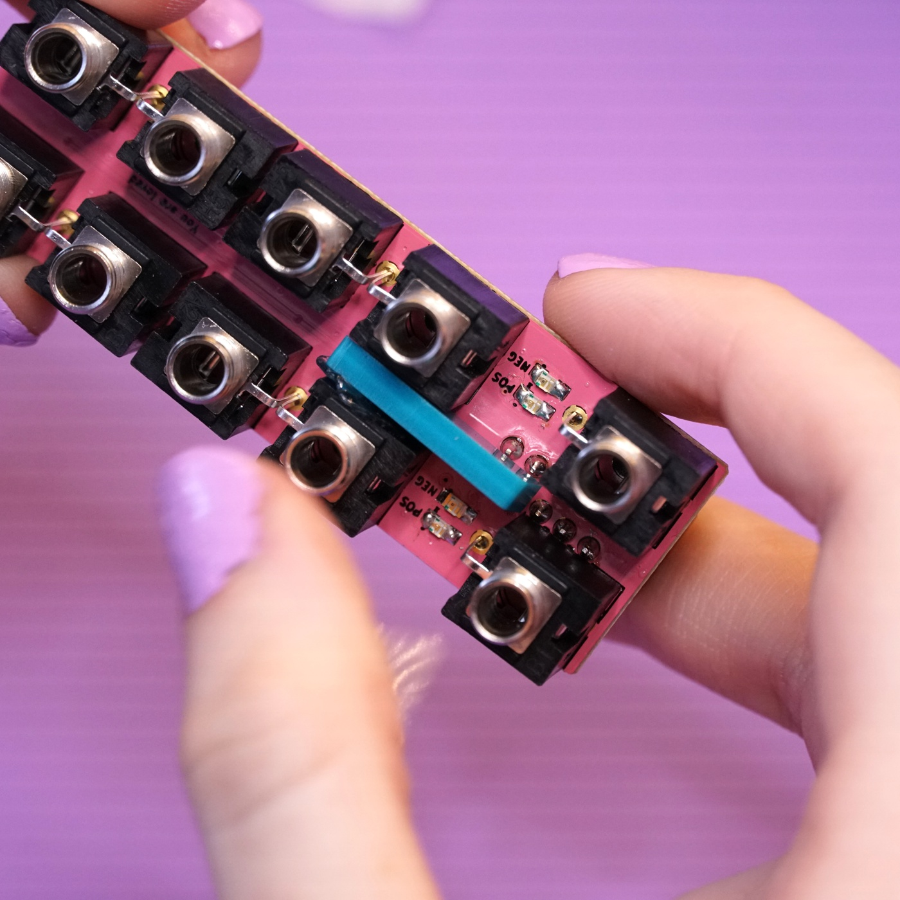

Hydrogen kit build guide#
Welcome to the build guide for Hydrogen's DIY kit. We hope you have a great time putting this module together and a wonderful time using it.
Please read all instructions thoroughly before starting. If you have questions or run into trouble please reach out to us on discord or drop us an email at support@winterbloom.com.
Some soldering experience is helpful but not required. If it's your first time soldering we recommend reading through Adafruit's guide to excellent soldering.
This build takes around one hour to complete.
Tools required#
Before you begin, make sure that you've got:
- Safety glasses. Yes, really. A pair like these are fine.
- Proper ventilation, like this small filtered fan.
- A temperature-controlled soldering iron, like this Hakko or the Pinecil. It is very important to use a temperature-controlled iron, since unregulated irons can easily get hot enough to damage components. You should set your iron temperature based on your solder manufacturer's recommendations.
- Solder. We recommend Adafruit's SAC305 solder or Kester 275 K100LD.
- A small flat head screwdriver, like this one.
Flux
We suggest using solder with "no clean" flux. If you use a different kind of flux, be sure to carefully clean the flux residue off based on the guidelines provided by the manufacturer of your solder. Take special care with the LEDs and potentiometers, as they can be damaged by water and flux cleaners.
Kit contents#
Your kit should contain the following items. If any are missing please email us at support@winterbloom.com.
- (1) Mainboard
- (1) Front panel
- (10) 1/8" jacks
- (10) Hex nuts for the 1/8" jacks
- (1) Eurorack power header
- (2) Rubber bands
- (1) Light blocker
Light blocker
Older kits include a little plastic square for the light blocker along with a glue dot, newer kits include a 3d-printed light blocker. The older one is pictured here.
Soldering the power header#
Your first task is to place and solder the power header to the mainboard.
Place the power header onto the back side of the mainboard, being careful to align the notch in the header with the drawing on the board. The power header fits snugly, so you might have to give it a little pressure to push it all the way in.

Flip the board over to the front side and solder the header's 10 pins. It's important to avoid touching the LEDs with your iron, as it could melt and destroy the LEDs. Also, take care not to put too much solder on these joints as it could make it difficult to place the jacks.
Placing the jacks#
Next up is placing the ten jacks on the front side of the mainboard.
The two jacks near the power header are placed according to the drawing on the board, with the third, bendy leg going into the adjacent hole.
The other jacks are a bit trickier. Start by placing the jack for Out B1 in the same orientation as the first two.
Then, place the jack for Out B2 in the opposite orientation and place the third leg into the same hole as the adjacent jack's third leg.

The jacks for Out B3 and Out B4 follow the same pattern - they are placed in opposite orientations and share a single hole for both of their third legs.

Repeat the same process to place the jacks for outs A1, A2, A3, and A4.
Using the front panel as a jig#
Since the jacks need to peek through the front panel, you can use it as a jig to make sure everything stays in the right place while soldering. Carefully line up the front panel's holes with the jacks and push the front panel on. Then, use the two rubber bands to temporarily hold the front panel on while you're working on it. You'll need to double over the rubber band to get it tight. Put the other rubber bands on the opposite side of the module so that everything is held down snugly.


Soldering the jacks#
With everything held in place, you can now flip the module over and solder all of the jacks in place. As you go, take a moment now and then to check that everything is flush with the panel and mainboard.

Once you've got most of the soldering done, you can move the rubber bands out of the way to get to the holes that they were covering up. You won't need the rubber bands again after this step, so feel free to give those a new purpose in life somewhere else.

Placing the light blocker#
Because the LEDs for Hydrogen's two channels are so close together, a small light blocker is used to keep them from bleeding into each other. There are two versions of the light blocker out there:
- The older kits come with a simple plastic square and a glue dot. The instructions below are for this version.
- The newer kits come with a 3d-printed light blocker. You don't need to glue this one in place, just place it in-between the jacks with the flat side facing upwards. The faceplate will hold it in place.

Prepare the glue dot by peeling off the white paper. Don't remove the clear film yet.
Place the exposed side of the glue dot to the upper end of the long side of the light blocker and remove the plastic film.
Place the light blocker between the two sets of LEDs and stick the end with the glue dot against one of the jacks. The light blocker doesn't need to be perfectly straight.

Putting the panel on#
The last step it to place Hydrogen's lovely panel on and secure it with the hex nuts. You don't need to over-tighten the hex nuts, finger-tight is fine.
All done#
Congratulations! You've finished your very own Hydrogen!

Now that it's all put together go check out the User's Guide and please show us your work by tweeting at @wntrblm or tagging @wntrblm in your instagram post.